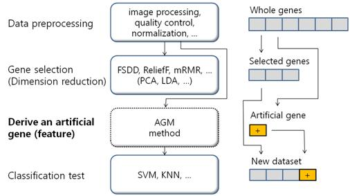
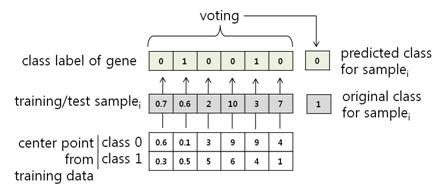
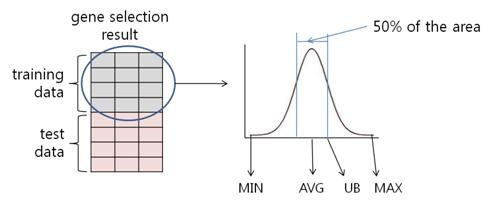
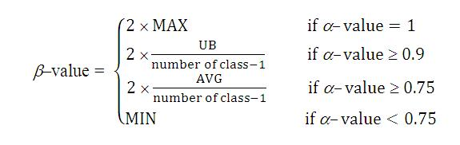

|
1. Introduction
In this study, we suggest a new method termed AGM (artificial gene making) to complement the problem of information loss. During feature selection and dimension reduction, information loss is inevitable. We attempt to minimize the information loss by introducing an artificial gene. Figure 1 summarizes the steps of classification analysis using the AGM method. An artificial gene is combined with the gene selection or dimension reduction result, which results in the formation of a new dataset. The role of the artificial gene is to leave space among different classes of a gene selected and dimension reduced datasets. This means that the artificial gene reduces ambiguous or congested areas among classes, which leads to improved classification accuracy. In our previous study, we confirmed that a wide congestion area leads to low Accuracy (Oh, 2011). Therefore, reduction of the congestion area by AGM results in improved classification accuracy.

Figure 1: New process of classification analysis for microarray data

Figure 2: Vote and predict class label for a sample data
2. Usage
More informations are included in information.txt about input data & output data format.
how to excute the program for making new dataset?
1. Download the Alpha.zip, Make Dataset.zip file.
2. These file included *.class, information.txt, Run.bat file
3-1 From Training-dataset.
First, read the information file. This file have a comment.
Second, according to the comment, write down the filename, and information.
(**You must delete the comment)
Finally, after save the information.txt file, excute the Run.bat at the windows command line
we can get a alpha-value.
3-2 From test-dataset.


Detailed formulas included paper.
We use a Microsoft excel statistical analysis tools
3-3 using the whole dataset(Original, and feature selection dataset(Training&Test)
First, read the information file. This file have a comment.
Second, according to the comment, write down the are as follow
(**You must delete the comment)
<information.txt>
Training_smoke.csv
Test_smoke.csv
Training_smoke_feature_20_RFS.csv
Test_smoke_feature_20_RFS.csv
900
Line1 : Original training dataset
Line2 : Original test dataset
Line3 : Feature selection training dataset
Line4 : Feature selection test dataset
Line5 : B-value
Finally, after save the information.txt file, excute the Run.bat
We can get a new dataset, and KNN class predict result, when k=3
3. Download
Alpha.zip
make dataset.zip
The Alpha.zip file contents:
Class File
- alpha.class
Executable File
- run.bat
Input File
- information.txt
The Make Dataset.zip file contents:
Class File
- Aknn.class
- Knn.class
- makeDataset.class
Executable File
- run.bat
Input File
- information.txt
Sample Dataset
- smoke.zip
This file have a four data.
1. Training_smoke.csv //Original smoke training dataset
2. Test_smoke.csv //Original smoke test dataset
3. Training_smoke_feature_20_RFS.csv //feature-selection training dataset using RFS algorithm.
4. Test_smoke_feature_20_RFS.csv //feature-selection test dataset using RFS algorithm.
We get a Beta value in this dataset is 900
4. Citation Request:
Minseok Seo, Sejong Oh*, Derivation of an artificial gene to improve classification accuracy upon gene selection., Comput. Biol. Chem., Vol 36 (2012), pp. 1–12
http://dx.doi.org/10.1016/j.compbiolchem.2011.11.002
|